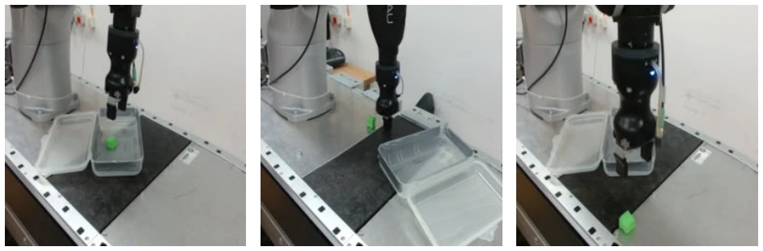
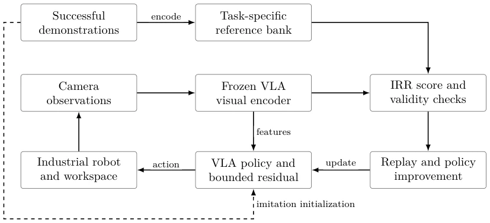
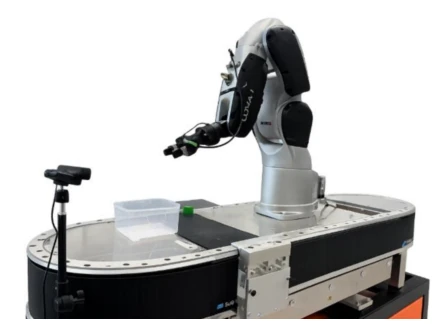

This paper is essentially a "research position statement," rather than a complete report of results. The authors propose "Intrinsic Robot Reward" (IRR), with the core logic being "eating your own dog food"—reusing the visual encoder already present in the VLA policy to evaluate its own performance, attempting to avoid the trouble of training a separate reward model. This idea is quite appealing, especially since maintaining extra models is too burdensome when repeatedly adapting to new tasks in industrial scenarios. However, to be a bit critical, this is currently a TRL 4 lab prototype; the main contribution lies in proposing the framework and baseline data, while the true IRR improvement effect is still "in the plans." It claims to reduce human supervision, but how to prove it is more cost-effective than direct parameter tuning or adding a RoboReward? Currently only a 56% baseline success rate is provided, still a distance from "self-evolution." However, in the current era of VLA proliferation, this "zero-cost" reuse idea is indeed worth following up on; at least it saves a perception backbone, provides a verifiable hardware foundation for subsequent physical learning, and clearly distinguishes the closed loop of evaluation and improvement.
Existing robot reinforcement learning (RL) often relies on external reward signals, such as geometric rewards [10] or human feedback [14], but this is costly in industrial scenarios. Especially when frequent adaptation to new parts or environments is required, retraining a dedicated reward model (such as RoboReward [18]) or relying on VLM evaluation [13] brings huge integration burdens and maintenance costs. Furthermore, although imitation learning (IL) provides successful demonstrations, it lacks an intrinsic feedback mechanism for failed attempts. Although SRPO [16] attempts to use its own trajectories as reference, it relies on sparse signals and offline RL. IRR aims to solve this pain point: utilizing the existing visual representations and successful demonstration endpoints in the VLA policy to build a task-specific reference library, achieving autonomous evaluation without an extra perception backbone. This not only reduces integration difficulty but also reduces repeated human result scoring, allowing robots to self-improve using existing data, particularly suitable for industrial assembly lines needing repeated adaptation to new workpieces, and requiring no additional labeling of failure samples.

Figure 2: Representative task outcomes. From left to right: successful completion, with the object released and resting inside the target container; grasp failure where the object is not securely picked; task failure where the object is dropped and not successfully recovered.
The overall process is based on the OpenVLA policy, adopting an architecture of "frozen encoder + reference bank scoring + residual RL improvement." First, freeze the VLA's visual encoder (such as DINOv2 or SigLIP), extract feature vectors of current observations and normalize them. Second, extract endpoint features from successful demonstrations of imitation learning to build a task-specific reference library (Reference Bank). During evaluation, calculate the distance between the features of new attempts and the nearest neighbor features in the reference library, convert to similarity scores via an exponential function, and introduce a persistence score to filter transient matches. Finally, use the IRR score as a reward signal to train a bounded residual controller (using the SAC algorithm) to correct the base VLA policy, forming a closed loop. The key innovation lies in not needing to train a new reward model, directly reusing the perception layer of the existing policy, and the reference library is built only from successful demonstrations, requiring no negative sample pre-training, ensuring consistency in the feature space. Formally, the reward is based on the inverse distance and temperature parameter, residual actions are generated by the SAC policy network, acting on top of the base policy output.

Figure 3: Proposed learning loop. Reference endpoints use the same frozen encoder as policy observations. The policy also receives the task instruction and proprioception. Independent outcome audits assess success outside the IRR policy-update path.
Experiments are based on a TRL 4 lab platform with a COMAU Racer 3 manipulator and Robotiq gripper; the task is to place a green block into a container. Baseline data comes from 245 demonstrations and 50 physical trials, with a success rate of 56%. The main failure reason is end-effector misalignment with the object. Evaluation design includes independently verified success rate, false positive rate (target ≤2%), and human effort comparison. Ablation studies are planned to compare single reference vs. reference bank, global vs. spatial features, DINOv2 vs. SigLIP, etc. Currently, the paper mainly provides baseline measurements and evaluation methodology; the true IRR improvement effect is the focus of subsequent research. By comparing human scoring rewards and external visual reward baselines, verify the balance of IRR between efficiency and performance. Specific metrics are shown in Table 3, including dimensions such as task success rate, learning efficiency, and reward cost.

Figure 1: Photograph of the available COMAU Racer 3 laboratory cell. The setup displays the integrated Robotiq Hand-E gripper, the primary camera viewpoint, the sample cube, and the designated target container.